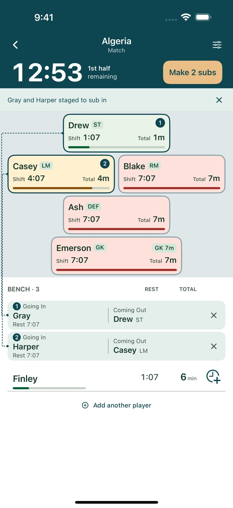
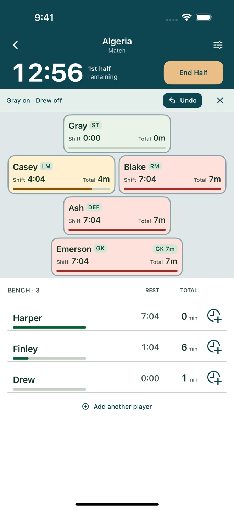

Soccer sideline app
Pitch Minutes
Who’s played, who’s rested, and who’s due a turn. A sideline tool that brings playing time and quick substitutions into one view.


In-game substitutions
During a soccer match, the coach is keeping track of the action as well as the players waiting for their next turn. Pitch Minutes brings the field, bench, match clock, and each player’s minutes together.
Tap a player on the field, then a player on the bench to substitute. Positions stay stable during selection, and a named confirmation makes the change easy to check. Undo lets the coach reverse it.
Field cards show current shifts and cumulative minutes. Bench rows show how long each player has rested, so the next decision can happen at a glance.

Playing time at a glance
The live match view keeps the match clock, formation, player shifts, and cumulative minutes together. Bench rows show how long each player has rested, so a coach can make the next substitution without leaving the game.
Outfield and goalkeeper time are tracked separately. Teams can choose formats from 4v4 to 7v7, optional goalkeepers, and different period lengths.
The app works offline without an account. A separate sample game lets coaches try the controls without changing their team’s records.